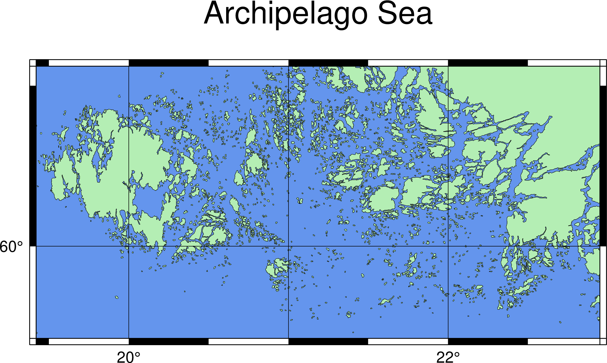

製作第一張地圖
Contents
4. 製作第一張地圖#
注意
本教學適用於 GMT 6 的現代模式。如須參閱 GMT 6 (傳統模式) 與 GMT 4-5 繪製相同地圖的教程，請至這裡。
說到 GMT 中最簡單的繪圖指令，那非 coast 莫屬。在本章中，我們要來解說如何用 coast 製作海岸線地圖、GMT 本身的參數輸入風格，以及如何調整這些參數。
4.1. 目標#
製作一張群島海 (Archipelago Sea) 的地圖，如下圖所示。群島海位於北歐，是波羅的海的一個附屬海，海如其名，被大小不等的眾多島嶼給佔據。事實上，群島海很有可能是擁有最多島嶼的海，雖然大部分的島都很小就是了。西邊的最大島嶼叫做奧蘭島 (Åland)，屬於芬蘭下轄的自治區。這麼多島嶼的地方，用來觀察 coast 的各種調整效果再適合不過了。
{kind=link}
直接觀看指令稿
4.2. 使用的指令與概念#
coast- 繪製海岸線GMT 共用選項：
-B-J-R-UGMT 的命令列參數調整
調整地圖邊框的簡單方法
使用 GMT 輸出不同格式的地圖
4.3. 操作流程#
繪製地圖的第一步，是決定我們繪製的地區。雖然我們已經知道要畫的是群島海了，但沒有詳細的經緯度是不行的。最方便取得經緯度的作法，就是去 Google Map 網站，搜尋 Archipelago Sea，然後視窗就會移到這片海域的附近。以右鍵在你想要當作地圖邊界的區域底點一下，選「這是哪裡？」，底下就會出現點選區域的名稱和經緯度。
注意一下經緯度的表示法，跳出來的視窗中有兩個數字，第一個 59.865253 是緯度，正值表示北緯，負值表示南緯。而第二個 19.435697 是經度，正值表示東經，負值表示西經。另外，這裡也不採用「度分秒」的角度格式，而是把所有零頭都歸到「度」後的小數點。這種格式比較容易進行數學運算，所以也是 GMT 預設採用的座標標示法。
查看一番後，這裡我們選擇經度從 19.42 到 22.95，緯度從 59.71 到 60.56 的這塊區域來畫圖。你也可以自由選擇你喜歡的區域。接著打開終端機，輸入如下指令：
$ gmt coast
會看到一連串的說明，coast 的全部語法和選項都會列在上面。如果你對選項的意思很熟，只是要確認一下的話，你也可以改成這樣輸入，如此一來，就只有選項用法的部份會顯示在螢幕上。
$ gmt coast -
幾乎所有 GMT 的指令，包含 coast，都是以類似如下的語法操作：
$ gmt 指令 (輸入檔) [選項1 選項2 選項3...]
所有以負號 (-) 開頭的文字，程式都會解讀成選項，而不是負號開頭的東西，就會是輸入檔。通常每個指令都會有一兩個必填的選項，而其他的選項如果沒指定的話，就會使用預設值。輸入檔和選項的先後次序，對 GMT 而言是沒差的，你也可以打完所有選項後，再打上輸入檔的名字。
不過 coast 這個指令稍微特別一點點，它不用給定輸入檔！這樣程式要怎麼知道海岸線位在哪呢？原來，GMT 的標準安裝內，已經有附上一個稱為 GSHHG 的資料庫，這個資料庫內含有許多世界的基本資料，像是海岸線、國界、河流等等的位置，而 coast 做的事情，就是從這個資料庫裡面讀取資料，畫到地圖上。因此精確說來， coast 不僅能畫海岸線，也可以畫河流、國界等等的特徵。不用給定輸入檔，我們只要專心在設定參數上就行了！第一個參數當然就是地圖的座標，是透過 -R (Region) 選項來設定的，選項值直接打在 -R 後方，不需要空格隔開。一般來說，-R 選項有兩種給定方法：
-R19.42/22.95/59.71/60.56
-R19.42/59.71/22.95/60.56r
第一種格式為 西邊界/東邊界/南邊界/北邊界，也就是由 x 座標 (經度) 和 y 座標 (緯度) 的範圍來指定。第二種格式使用時，要在最後面加上 r，這樣子四個欄位就會是 左下角經度/左下角緯度/右上角經度/右上角緯度。以上兩行實際執行時，效果會一模一樣。在本章中，我們會使用第一種格式繪圖。
對於簡單的地圖來說，一個 GMT 指令就能完成所有步驟。以本章的地圖爲例，我們只需產生海岸線、陸海域填色、地圖格線、標題等的簡單元素，這些東西靠 coast 一個指令就能做到。因此除了 -R 以外，我們還要給定另一個參數來指定輸出檔名稱。這個參數就是輸出檔的副檔名。語法如下：
-png archi_sea # archi_sea 是輸出檔檔名。注意 png 和檔名之間有空格。輸出檔的全名爲 archi_sea.png
-pdf archi_sea # PDF 格式輸出。檔名爲 archi_sea.pdf。
其他可選的格式還有 -eps, -ps, -jpg 等等，可參閱官方手冊的格式列表。現在我們就來看看把 -R 和 -png 選項拼在一起會發生什麼事。在命令行輸入以下指令然後執行看看：
$ gmt coast -R19.42/22.95/59.71/60.56 -png archi_sea
coast [ERROR]: Syntax error: Must specify at least one of -C, -G, -S, -I, -N, -Q and -W
嗚唔，出現錯誤了！問題出在我們還有一些選項沒有給定。這是有關「繪圖樣式」的設定。GMT 要求我們至少給定一種繪圖樣式，我們先使用 -W 以指定海岸線的畫筆屬性。畫筆具有三種屬性：粗細、顏色跟樣式，給定的語法是
-W粗細,顏色,樣式
如果省略時，就使用預設的樣式作圖。我們試著指定指定畫筆粗細為 0.1 點 (1 點 = 1/72 英吋 = 0.03527 公分) 的黑色線條看看：
-W0.1p,black
0.1p 代表的就是 0.1 點，black 就是黑色，顯而易見的我們沒有指定線條樣式，程式就會以預設的實心線條作圖。值得一提的還有，我們在這裡使用了 GMT 預先定義的顏色名字，這些名字可以在`這裡 <gmt.soest.hawaii.edu/doc/latest/gmtcolors.html#list-of-colors>`_查詢。
備註
有關畫筆的進階樣式設定，例如設定線條樣式、利用 RGB 值自訂顏色等，會在「畫筆與調色技巧」詳加描述。
目前已經設定了三個選項，coast 已經可以正常執行了。把所有的選項合併在一起輸入後，你應該就能得到輸出圖檔 archi_sea.png：
$ gmt coast -R19.42/22.95/59.71/60.56 -W0.1p,black -png archi_sea
這張地圖基本上已經描繪出群島海的海岸線，但由於缺乏了顏色和經緯度座標等等資訊，使地圖資訊難以判讀。另外，因爲 GMT 預設的地圖座標是 WGS 84 經緯度，所以高緯度地區的地圖都會被拉得很扁平。我們可以換一個投影座標，讓海岸線沿緯度的變化能清楚地顯示。GMT 中以 -J 設定投影法，有五花八門的樣式可供選擇，這裡我們來選個在畫小範圍地圖時很常用的麥卡托投影法來看看。語法是：
-JM6i
在 -J 後面的 M 為麥卡托投影的代號，6i 代表地圖橫向的寬度為 6 英吋 (inch)。如果你對英吋有多長不熟，也可以換成 -JM15c，代表地圖橫向的寬度為 15 公分 (cm)，差不多就是 6 吋的長度。
注意
-J 和 -R 具有連動關係，也就是說在不同投影法之下，給定地圖邊界和尺寸的方法與參數輸入模式會有點不同，請參閱 GMT 官方說明。有關於各種投影法的適用情形，請參閱地理資訊系統與測地學專書的介紹。另外，GMT 預設的大地座標系統是 WGS84 參考橢球，如欲調整此設定，請參閱版面設計與地圖的幾何布局。
另外爲了讓地圖易於判讀，我們也可以為陸地和海洋加上顏色，使用的分別是 -G (Ground) 和 -S (Sea) 選項：
-Gdarkseagreen2
-Scornflowerblue
darkseagreen2 和 cornflowerblue 都跟 black 一樣，是 GMT 預先設定的顏色名字。把以上的選項全部都拼在一起，大概就像這樣：
$ gmt coast -R19.42/22.95/59.71/60.56 -JM6i -W0.1p,black -Gdarkseagreen2 -Scornflowerblue -png archi_sea
可以看得出來現在指令已經有點長了，這是 GMT 的常態，尤其會在你嘗試調整預設值、畫出更漂亮的地圖時發生。在命令列操作時，這不是什麼大問題，終端機都會自動幫你換行，不過之後如果有要寫 GMT 腳本的需求，為了排版美觀，可以使用 UNIX 常見的接續符號 \，換行繼續輸入指令。以下指令跟上面的指令效果一模一樣：
$ gmt coast -R19.42/22.95/59.71/60.56 -JM6i -W0.1p,black -Gdarkseagreen2 \
-Scornflowerblue -png archi_sea
本文為了方便閱讀起見，也會使用 \ 分隔過長的段落，但如果你想要在一行之內完成此道指令，則可以省略這個符號。
小訣竅
在 GMT 6 中，預設的海岸線是以最高等級的解析度呈現。如果你的地圖涵蓋很大的區域，海岸線可能會太過密集，模糊了地圖的焦點。要解決此問題，可以更改海岸線解析度的選項 -D，接受的設定值有 f (full，完整)、h (high，高)、i (intermediate，中)、l (low，低) 和 c (crude，粗糙)。例如中等解析度的設定值就是 -Di。
以上指令畫出來的地圖如下所示
{kind=link}
由此可見，光是調整投影法，以及陸地與海洋的顏色，整張圖就會與脫胎換骨。
目前主圖大致上都完成，剩下邊框需要加入。GMT 使用 -B 選項設定地圖的邊框與附屬要件，如格線、座標標誌、底色、標題等等，合起來稱為底圖 (Basemap) 設定。-B 選項是 GMT 中最複雜的選項之一，有著五花八門的樣式組合可供選擇。這邊我們先講最簡單的兩種組合
-Ba座標數值間隔f座標刻度間隔g格線間隔
-B地圖四邊設定+t標題
第一種組合可以給定地圖邊框的數值、刻度與格線設定，而且使用與 -R 相同的座標單位，例如 -Ba1f1g1 代表數值、刻度與格線都是每隔 1 度畫一條，而 -Ba2f1 是「每隔 2 度標示座標、每隔 1 度標示刻度，然後不加格線」。第二種組合可以調整地圖的四邊配置，使用 W、S、E、N 來表示東、南、西、北，大寫表示加上邊框也加上數值，小寫表示只加上邊框而不加數值，如果不加就是不畫邊框。例如 -Bwsne 就是單純畫上邊框，不加上數值顯示 (前面的 a 設定會無效)，而 -BWSe 則代表「在西方與南方畫邊框且標上數值、在東方單純畫邊框、在北方什麼都不做 (地圖上端會破一個洞)」。第二種組合可以透過 +t 來延伸，後方可以輸入此幅地圖的標題。兩種組合可以同時加在一個指令內，例如說我們的地圖如果這樣設計：
$ gmt coast -R19.42/22.95/59.71/60.56 -JM6i -W0.1p,black -Gdarkseagreen2 \
-Scornflowerblue -Ba2f0.5g1 -BWSne+t"Archipelago Sea" -png archi_sea
那麼，地圖四邊都會加上邊框，但只有西側和南側會標上經緯度，經緯度會以每 2 度標示一次，刻度 (黑白線區間) 以每 0.5 度標示一次，格線每 1 度就有一條，而且還會加上 Archipelago Sea 這個標題。畫出來的樣子如下所示：
{kind=link}
小訣竅
事實上，-B 選項其實是另一個稱為 basemap 指令的精簡版。許多更複雜的邊框設定可以透過 basemap 來達成，如此一來，程式會先畫好邊框，我們再把其他圖層填到邊框內即可。有關進階的 -B 選項調整，像是自訂數值標記、各軸分開設定、主格線與次要格線、中文字標題與標記等等，會在之後的章節說明。
你會發現，群島海的島實在太多，如果我們還想在上面標上其他資訊的話，這些群島很容易讓看地圖的人分心。為了精簡地圖，讓讀者聚焦在關鍵資訊上，coast 提供了 -A 選項，這個選項可以讓我們輸入島嶼面積 (單位是平方公里)，然後 coast 會省略比這個面積還小的島嶼不畫。這裡我們要省略比 0.1 平方公里還小的島嶼：
$ gmt coast -R19.42/22.95/59.71/60.56 -JM6i -W0.1p,black -Gdarkseagreen2 \
-Scornflowerblue -Ba2f0.5g1 -BWSne+t"Archipelago Sea" -A0.1 \
-png archi_sea
島嶼比較少，看起來清爽多了，卻又不會喪失「群島海」名稱的霸氣。
{kind=link}
我們的地圖目前已大致完成。最後，可以再使用 -U 選項在左下角加上 GMT 軟體的標誌。-U 選項可以直接加在指令內，不用給定任何值。
4.4. 指令稿#
本地圖的最終指令稿如下：
$ gmt coast -R19.42/22.95/59.71/60.56 -JM6i -W0.1p,black -Gdarkseagreen2 \
-Scornflowerblue -Ba2f0.5g1 -BWSne+t"Archipelago Sea" -A0.1 -U \
-png archi_sea
備註
「繪製海岸線圖 - 以 19.42E - 22.95E，59.71N - 60.56N 為邊界，麥卡托投影，地圖橫向寬 6 吋，海岸線的線條使用 0.1 點的黑色線，陸地使用 darkseagreen2 填色，海洋使用 cornflowerblue 填色，四邊繪製邊框並在左側和下側標上刻度數值，數值間隔 2 度，刻度間隔 0.5 度，格線間隔 1 度，標題為 Archipelago Sea，存檔為 archi_sea.png。」
觀看最終版地圖
4.5. PyGMT 指令稿#
使用 PyGMT，可以如下腳本繪製本地圖：
import pygmt
fig = pygmt.Figure()
fig.coast(region=[19.42, 22.95, 59.71, 60.56], projection="M6i", shorelines=['0.1p', 'black'], land='green',
water='cornflowerblue', frame=['a2f0.5g1', 'WSne+t"Archipelago Sea"'], area_thresh=0.1, timestamp=True)
fig.show()
fig.savefig('archi_sea_pygmt.png')
你可以使用以下的 Binder 連結嘗試此程式碼：
4.6. 習題#
畫出蘇拉威西島 (Sulawesi) 的海岸線圖。蘇拉威西島是印尼第四大島，外觀非常有趣，像是字母 K 或是正在跳舞的人。座標可使用
118.34E 至 125.70E，以及6.12S 至 2.08N。